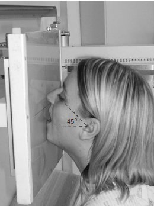

Paranasal Sinuses(Occipito-Mental)
Centering point:The central ray of the skull unit should be perpendicular to the
cassette holder and by design will be centred to the middle of
the image receptor. If this is the case and the above positioning
is performed accurately, then the beam will already be centred.
If using a Bucky, the tube should be centred to the Bucky
using a horizontal beam before positioning is undertaken. If
the above positioning is performed accurately and the Bucky
height is not altered, then the beam will already be centred.
To check the beam is centred properly, the cross-lines on the
Bucky or cassette holder should coincide with the patient’s
anterior nasal spine

Cassette Size:24cm x 30cm (12 x 10 ins)
Potrait
Exposure Factors:75kVp on
20mAs
FFD:100cm
Bucky/Grid:Moving or Stationary Grid
Filter:No
Collimation:Collimate to include the sinuses
Pathologies:fluid in sinuses
Position of patient and cassette
- The projection is best performed with the patient seated
facing the skull unit cassette holder or vertical Bucky.
- The patient’s nose and chin are placed in contact with the
midline of the cassette holder. The head is then adjusted to
bring the orbito-meatal baseline to a 45-degree angle to the
cassette holder.
- The horizontal central line of the Bucky or cassette holder
should be at the level of the lower orbital margins.
- Bucky or cassette holder by checking that the outer canthi of
the eyes and the external auditory meatuses are equidistant.
- The patient should open the mouth as wide as possible
before exposure. This will allow the posterior part of the
sphenoid sinuses to be projected through the mouth.